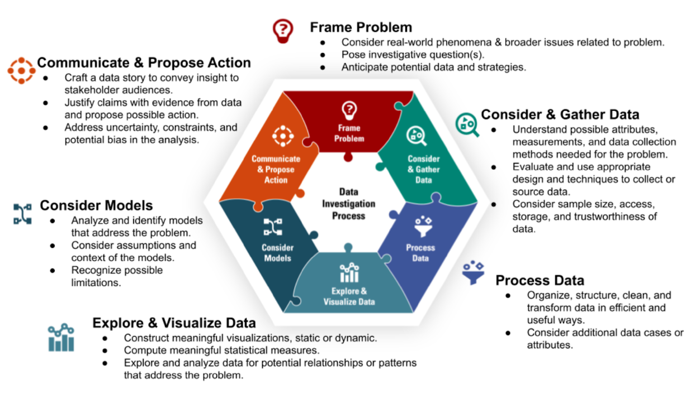
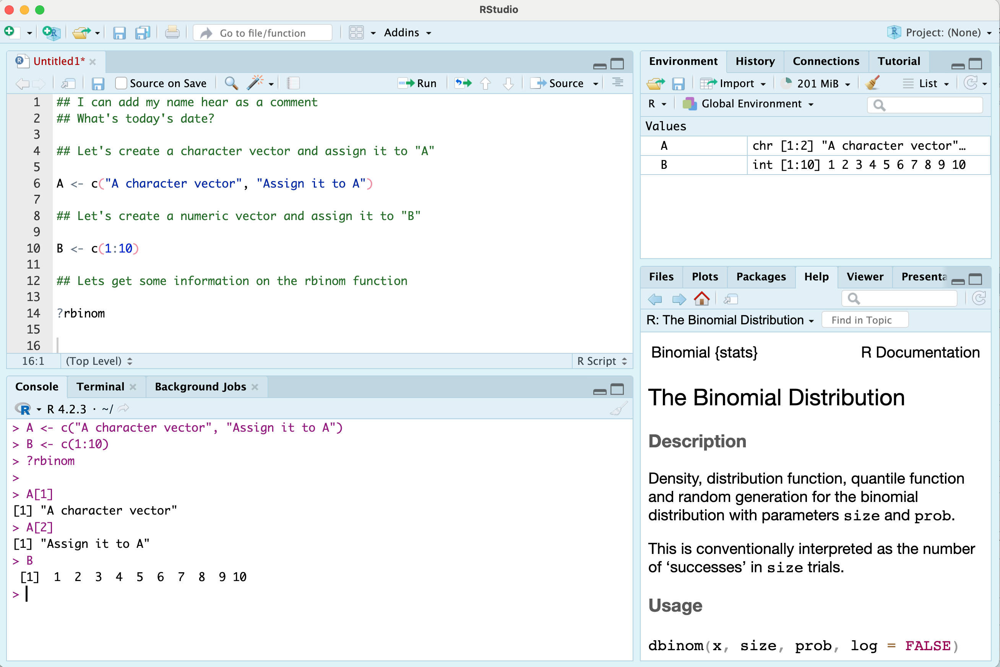
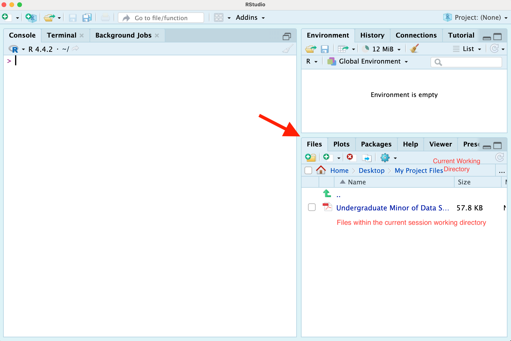

A Project-based Approach to Introductory R and Python for Data Science
Introduction
What does it mean to be a data scientist?
The answer to this question might depend on who you ask! Although data science applications may involve various disciplines (e.g., mathematics, statistics, computer science), skills (e.g., programming, visualizing), and roles (e.g., data analysis, software & tool development), certain processes transcend the many categorizations within this field. Furthermore, domain knowledge and data investigations of interest may come from humanitarian fields, social sciences, engineering, educational settings, and beyond. Thus, a data scientist may have multiple roles and focuses.
The Data Science Workflow
Rather than choosing a specific definition, you can think about data science from a process perspective. The following framework developed by Lee et al. (1), is an example of how your data science process may unfold for a given project.

Notice that the diagram represents the various data science processes in a non-linear way. Although the project you will pursue is structured through a sequence of milestones, it is common and often necessary to revisit prior stages of a data science workflow. For example, it may not be unusual to begin with data collection before framing a problem, and this may be driven by access to a particular data source. As explorations unfold, you might find the need to consider other angles of inquiry. On the other hand, questions of interest may drive the data collection process.
As we explain later, your course project will begin with a pursuit based on your interest. You will find a dataset that is of interest to you and this will be the starting point for subsequently framing a data investigation (i.e., you will consider and gather data as the initial workflow step).
Why R and Python?
So, why is this course focused on data science programming using R and Python?
For one reason why R and Python are important for data science, let’s consider the latest Kaggle report State of Data Science and Machine Learning - Kaggle 2022 that presents results from a survey of data science industry professionals from around the world. In this presentation, both Python and R are in the top three programming languages for data scientists. Furthermore, RStudio was used approximately by one in four data scientists and Jupyter Notebooks were used by over 9 out of 10 data scientists who responded to the survey.
Since the time of this study, RStudio has integrated Python into its platform. In particular quarto files can contain both R and Python code, as well as other languages, and can render reports and presentations in many different common files types, such as pdfs, word documents, powerpoint, and more.
So, R and Python are not only powerful and useful languages to accomplish a given data science tasks, but they are also widely used by professional practitioners. This is for good reason - both R and Python are often found to be the intuitive tool of choice. Furthermore, individuals from all fields of study and professions desiring to derive reproducible insights from data should feel confident that the tools that are within their grasp, R and Python, are industry standards.
Course outcomes
Our goal in creating this book is to provide you with a resource to guide your R and Python programming skill acquisition through a data-centric project-based approach. A fundamental idea behind this approach involves facilitating your agency in continued data science learning and up-skilling. So, you will not only learn to program in R and Python, but you will also be able to extend your learning in a self-directed capacity with a broader data science workflow in mind.
We will provide material for you to increase your knowledge and comfort with programming in R and Python through relevant and applied data explorations and a real world data investigation experience. The R and Python programming skills that you will acquire will be utilized to create a data science project.
How can this book be used?
This book can be used as a course preview, review, and supplement to the material that will be covered in class. In our R and Python for Data Science course, and in other similar project-based courses, suggested readings can (and will) be provided from the contents of the following chapters in corresponding sequence with the course material. This book is also a guide to the course project, the overall course objectives, and the big picture data science considerations that we will emphasize.
Applied data science may involve goal-oriented steps that help to move projects towards a certain or desired outcome. In the next chapter we present project development steps from this applied focus. We also include big picture considerations that can transcend a given data science project. Of course, since we are learning programming for data science through an application, we need data! But before that, we need to setup our environment in such a way that is helpful in organizing our processes and files in service of our investigation of interest.
Setting up your environment
Installing RStudio
If you’re interested in using R on your local device(s), you can download the latest version of the language and the RStudio platform through the Comprehensive R Archive Network (CRAN) at The R Project for Statistical Computing Website.
The RStudio IDE
RStudio is an integrated development environment (IDE). As an IDE, RStudio provides a way to create & edit code, render presentations, connect with version control platforms and more.
Let’s look at the default layout and the RStudio desktop features that will help us build our data science workflows as we learn the R programming language.

In the image above, there are four main windows. The upper left is the Source window where you can open various files to write, manage, and save your code. Notice that there is an “Untitled1” tab in this window, which is an unnamed R Script - a basic file type that allows you to write and manage your code. In an R script we might read in data and write code to gather information about the data, such as the size of the dataset and the column names. RStudio uses certain colors to delineate different aspects of your code (e.g., to distinguish “comments” from executable code).
Beneath the Source window is the Console. The console displays the code that is run and the results of the code that is run. You can also type code directly into the console and even save different objects to memory from this window. However, the console does not save or retain your code once you have ended your R session, as where R Scripts and other file types managed through the Source window are designed for this purpose.
The window on the top right contains many tabs, including the Environment tab. The Environment tab provides information on the objects, or accessible elements, in your session’s memory. Other tabs in the window may include the History tab, and perhaps a tab that interfaces with version control platforms, like GitHub.
The final window, in the bottom right, also contains many tabs. The Files tab provides information about your current working directory and the files that exist within that working directory. The Plots tab can display features such as graphs generated from code, like a scatterplot or boxplot. In the image above, the information displayed in the bottom right window is from a call to the Help feature which has been done through the line of code that reads “?rbinom”. The contents of the help search will appear under the Help tab when selected.
Your RStudio view is customizable through the Pane Layout options. For the purposes of this course, the default display will work well. Our focus will mainly be on the Source/Editor and the Console. We may reference the Files tab, the Help feature, and display plots within the Plot window; and we may investigate information within the Environment. However, these useful features supporting roles in our data science workflow which will mainly be captured by the main character - our editor.
In this section, we introduced a lot of vocabulary without detailed explanation. As you move through the course we expect that all of the information referenced here will be clear to you and encourage you to look back at this section, in particular, and the accompanying image as a reflection of your progress with the RStudio platform. You will be able to describe all that appears in the visual!
Setting up your course workspace (R projects)
Organization is a fundamental part of a project workflow. For our project, we can leverage the computer’s folder system to efficiently and effectively store and access our course materials. Given that we are working in RStudio, we can do this by setting up an R project.
An R project is a directory that can contain all of your files related to an analysis or some grouping of materials that you would want to keep together. For example, your R project might contain datasets, images, scripts, output, and other information that you access in creating a presentation. For our course, the R project we create will be used to keep track of your course materials and assignments. The R project space we will create will be your organizational space that points to what you are doing in this course.
When you set up your R project you will create a folder on your computer and new documents that you add to that folder will be a part of the files in your R project environment. Conversely, files that you create in your R project session will be added to your R project computer folder by default.

Note that the Files tab/window is an interface to your computer files, so modifying files through this window correspondingly modifies the files on your computer, outside of R.